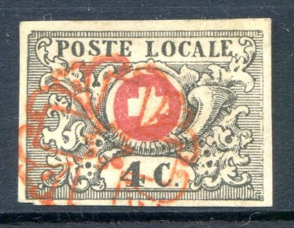
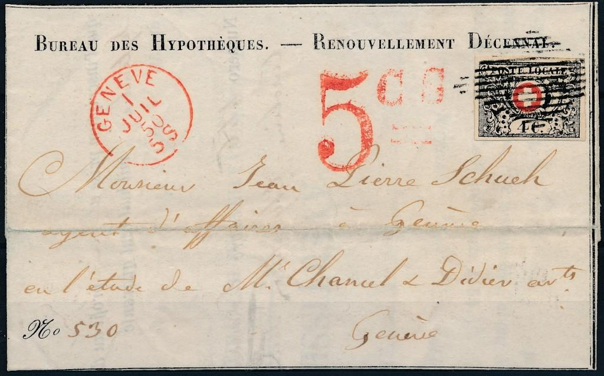
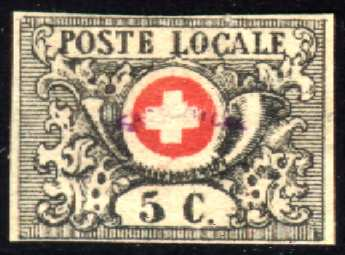

Waadt
Return To Catalogue - Vaud, part 2 - Basel - Geneva - Neuchatel - Winterthur - Zurich - Switzerland overview
Note: on my website many of the
pictures can not be seen! They are of course present in the
catalogue;
contact me if you want to purchase the catalogue.
Many stamps of the first issued and cantonal stamps can be found on the website http://www.ghonegger.ch/ (with many beautiful pictures of the rarities of this country).
Actually these stamps were used in Geneva, but they are known as the Vaud issue.


4 c black and red 5 c black and red (1850)
The 4 c and the 5 c are identical, except for the figures of value. The 4 c was introduced first (22nd October 1849), but only after a few months the postal rate was changed to 5 c (22nd January 1850). The figure '4 c.' were manually changed to '5 c.' on sheets of 100 stamps. Therefore 100 types of the 5 c exist (only 1 type of the 4 c exists). The 4 c is therefore considerably more valuable than the 5 c (about 80 stamps on cover are known to exist). All 100 types of the 5 c can be found in the book 'Distinguishing Characteristics of Classic Stamps; Europe 19th Century' by Hermann Schloss. In each of the 4 corner stamps of the sheet a red dot can be found in the center of the red cross.
(Red dot in the center of the cross of the corner stamps)
Value of the stamps |
|||
vc = very common c = common * = not so common ** = uncommon |
*** = very uncommon R = rare RR = very rare RRR = extremely rare |
||
| Value | Unused | Used | Remarks |
| 4 c | RRR | RRR | |
| 5 c | RRR | RRR | |
Cancels are rosettes in several designs in red or black, a grid in black or five thick bars in black. (source: 'Album Weeds'). Furthermore I have seen a 13 lined diamond shaped cancel of Geneva. Examples of cancels:
(Red rosettes)
The rosette shown in the left stamp was used from 22 October 1849 to 22 January 1850. The rosette of the right stamp was used from 23 January 1850 to 31 December 1850. From 1st of January 1851 to 16 January 1851 this right rosette was used in the colour black.

(grid cancel)
I've also seen a so-called 'Eidgenossige Raute' (federal grill cancel) on a 5 c value.
How to detect forgeries? The genuine stamps have a broken upper left corner, the top and the side lines do not meet (this seems to be the easiest test to detect forgeries, according to Album Weeds). There should be seventeen turns of the ribbon of the posthorn just below the cross (many forgeries have a different number of turns). Also note the position of the four solid black dots at each side of the value label. Many forgeries seems to have difficulties in reproducing the exact location of these dots. The white cross has NO black outline. Other checks are: the scroll-work of the left side of the stamp touches the foot of the "P" of "POSTE", but not the head of the "P". The scroll-work on the right side touches the bottom of the "E" of "POSTE".
At least 17 different kind of forgeries exist (in the early 20th century and probably many more today).
The above two stamps are forgeries, note that they have exactly the same cancellation at the same place!
 


Forgeries





Two forgeries with "S" slanting forwards; the
"C" after the value is too large


Forgeries, note the large upper part of the "C" in
"4 C.", many of the other letters are also different
when compared to a genuine stamp.

(Forgeries with "FACSIMILE" overprint, note the low
"C" in "LOCALE", they might be Champion forgeries)
For more forgeries of Vaud, click here for Vaud, part 2


{kind=link}
{kind=link}
{kind=link}
{kind=link}